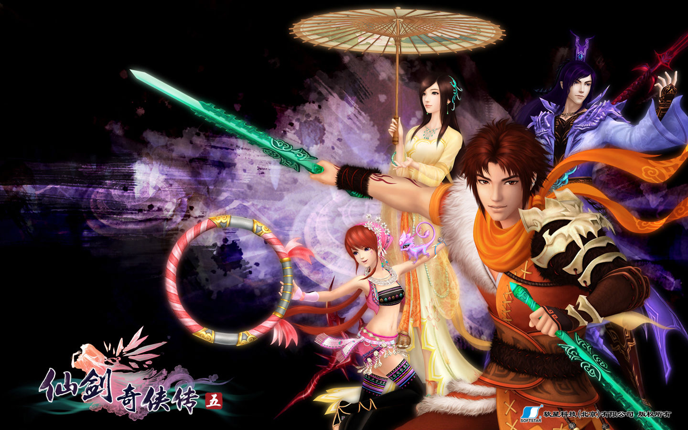

|
|
|
《仙剑奇侠传五》是国产中文RPG《仙剑奇侠传》系列的第六部单机RPG作品，由台湾大宇资讯旗下的北京软星公司研发，即由“仙剑之父”姚壮宪带领新生团队制作，音乐仍由曾志豪、吴欣睿等大师制作，并邀请连方辰、王若馨演奏部分乐曲。本次游戏故事发生在初代剧情的30多年后，主题为心愿。2011年7月7日，游戏正式在两岸三地同步上市；8月19日，剧情配音包正式发布。另外，游戏共三部DLC，分别为《魔灵幻像》、《暮雨今夕》和《前尘若梦》。
在山寨中长大的姜云凡，原是不知天高地厚的轻狂少年，然而苍木山上，当他踏出山门那刻起，便已踏上命中注定的长旅。
温柔大小姐唐雨柔，精灵苗疆女小蛮，神秘贵公子龙幽……邂逅的是宿世因缘，抑或命运作弄？
蜀山剑仙，武林世家，妖魔邪异……变幻的是沧桑世事，抑或百态人心？
锁妖塔下，神魔之井……掩埋的是前尘过往，抑或汹涌暗流？
而当漫长的追寻到达终点，所求为何，所得，又是如何？
遗憾，完满……破灭，救赎……诀别，约定……聚散离合，白云苍狗，三尺霜刃，十丈红尘，仙剑奇侠，再续仙缘。
请支持正版
http://pal5.baiyou100.com/1701000.asp